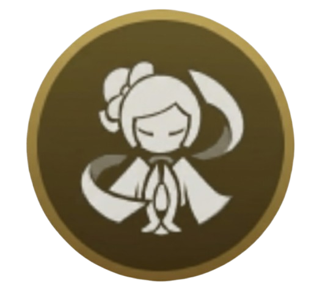
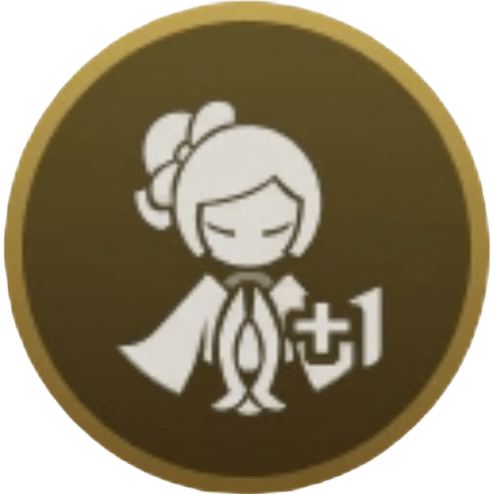
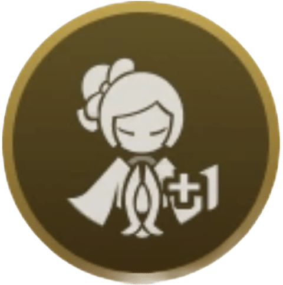
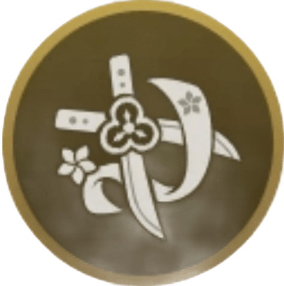
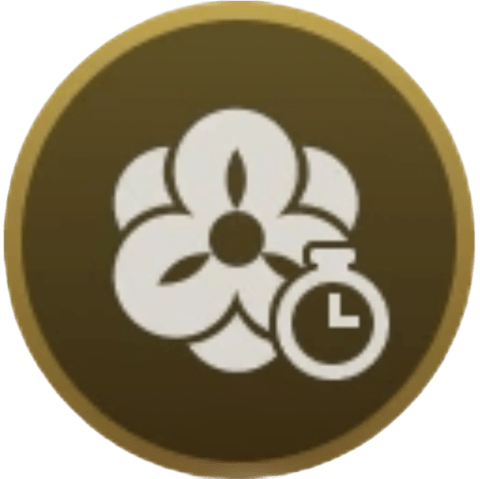

Constelaciones
-
Constelación 1: Maestría de la seda
Aumenta en un 50% el AdE de los ataques de la robomuñeca Tamoto de Caricia de mangas. Además, si en el equipo hay algún personaje Geo aparte de Chiori, se activarán los siguientes efectos cuando finalice la arremetida de Caricia de mangas:
• Invoca a otra Tamoto. Solo puede haber una Tamoto adicional creada o bien de esta manera, o bien mediante una creación Geo.
• Activa los efectos del talento pasivo “Retoque final”. Es necesario desbloquear este talento. -

Constelación 2: Tintura polícroma
Durante 10 segundos después de usar Filos gemelos: Desenvaine alígero, cada 3 segundos se invoca al lado de tu personaje en uso una robomuñeca sencilla Kinu. Kinu ataca a los enemigos cercanos para infligirles Daño Geo en el AdE en una cantidad equivalente al 170% del daño de Tamoto. El daño infligido de esta manera se considera daño de Habilidad Elemental. Kinu desaparece tras atacar una vez o después de 3 segundos.
-

Constelación 3: Bordado y rematado
Aumenta el nivel de habilidad de Caricia de mangas +3.
Puede ser aumentado hasta Niv. 15. -

Constelación 4: Protocolo de sastre
En los 8 segundos después de activarse alguno de los efectos del talento pasivo “Hecho a medida”, cuando tu personaje en uso golpea a un enemigo cercano con un Ataque Normal, Cargado o Descendente, invocará una robomuñeca sencilla Kinu cerca de dicho enemigo. Aunque de esta forma solo se puede invocar una robomuñeca sencilla Kinu por segundo, mientras el efecto de agudeza o el de costura del talento pasivo “Hecho a medida” estén activos, se podrán invocar un máximo de 3 robomuñecas Kinu. Todo este efecto solo se puede activar una vez cada 15 segundos.
Es necesario desbloquear el talento pasivo “Hecho a medida”. -

Constelación 5: Seda habutai
Aumenta el nivel de habilidad de Filos gemelos: Desenvaine alígero +3.
Puede ser aumentado hasta Niv. 15. -

Constelación 6: Convicción y ambición
Tras activar alguno de los efectos del talento pasivo “Hecho a medida”, el TdE de Caricia de mangas se reduce en 12 segundos. Es necesario desbloquear el talento pasivo “Hecho a medida”.
Además, el daño del Ataque Normal de Chiori aumenta en una cantidad equivalente al 235% de su DEF.